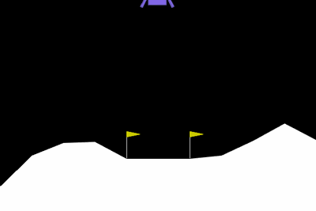

See the situation
Eight numbers describe where the rocket is and how it is moving. The AI doesn’t see the animation.
What happens when an AI learns to fly by trial and error? Watch it land, discover why it sometimes fails, and explore the evidence behind every experiment.

Every result has a story.
We keep the failures, too.
The AI sees the rocket’s position, speed, tilt and leg contact. It chooses an engine action, receives points, and adjusts its neural network over many attempts. This is reinforcement learning.
But points can teach the wrong lesson. Give the rocket a bonus for hovering and it may learn to stay in the air instead of landing. Our lab makes that mistake visible—and tests a better reward.
Eight numbers describe where the rocket is and how it is moving. The AI doesn’t see the animation.
Do nothing, fire the main engine, or use a side engine. Each choice changes what happens next.
PPO adjusts the policy from experience. Separate tests check whether the rocket actually learned to land.
This policy gets a bonus for being upright and slow in the air. In its original 100-flight calm test, it timed out every time. The lesson: measure the outcome you actually care about.
Inspect the flight evidence ↗
Explore landing rates, flight scores and engine use. Filter real flights by weather and outcome.
02 / FLIGHT REPLAYReplay position, speed, tilt and engine actions from recorded numerical telemetry.
03 / MACHINE LEARNINGSee what a separate classifier predicts after just three seconds—and how often it is right.
04 / PROJECT ASSISTANTSearch project evidence and check exact calculations from saved flights.
¹ Original baseline test: 100 calm episodes, one trained policy. Simulator results are not real-world flight guarantees.
Compare what the policies actually do, using the original simulator score.
Intervals describe uncertainty across episodes for these saved policies.
Higher scores can still hide failures. Compare outcomes as well.
BaselineLearned with the original reward.
TimeGets a small penalty for every step.
HoverIntentionally rewarded for staying airborne.
FixedUses progress shaping and a time cost.
Choose an attempt to replay its recorded position and inspect the telemetry.
Blue: horizontal speed · orange: vertical speed · green: tilt. Values use simulator scaling.
Saved classifier forecasts use only the first three seconds of each recorded flight.
Search the project evidence and measured results. This online demo shows excerpts and calculations; local AI generation runs in the desktop lab.
Start with a question. Numbers are computed from saved flights. Other questions search project evidence. Local language generation is available in the desktop lab.
This hosted demo uses evidence search, without a running language model. Expand each source excerpt to inspect support. The full local app also supports Ollama generation.
Inspect a completed fine-tuning experiment with changing wind and turbulence.
At each training reset, wind is sampled from 0–18 and turbulence from 0–1.8. The policy learns with the original reward. A separate 50-flight test in each condition compares it with its source policy.
The completed experiment is shown below. Run new training from the full Python app on your laptop.
Compare landing reliability and original score under the same test protocol. More training is not guaranteed to help.
This is an exploratory fine-tuning experiment with one seed per run. It does not establish general superiority. Repeated tuning on the test seeds would turn them into development data.